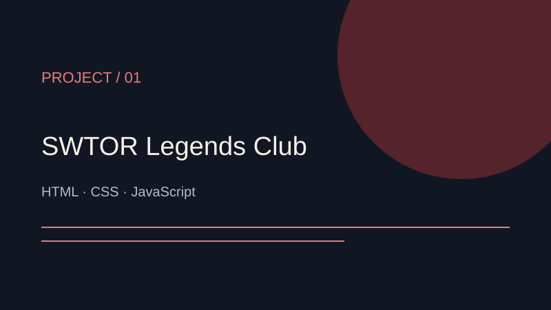
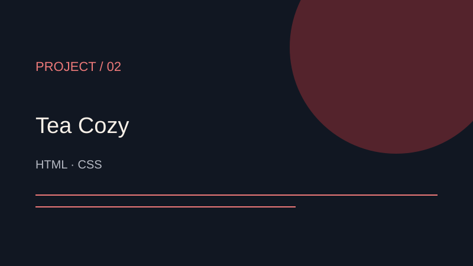
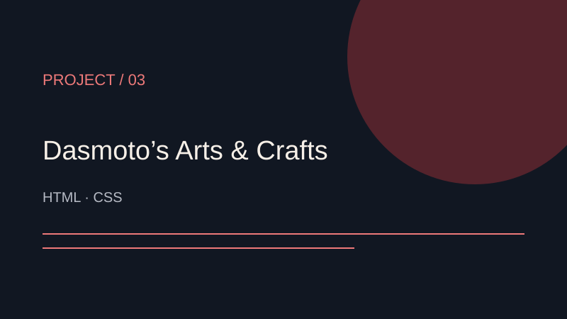
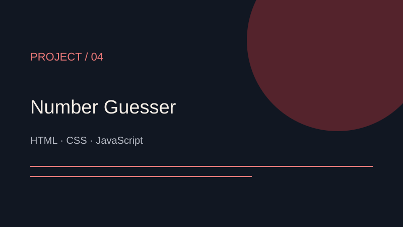
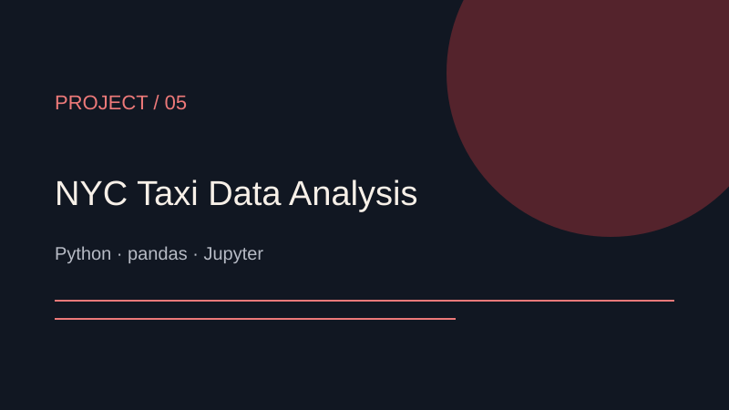

PROYECTO / 01
SWTOR Legends Club
Web de un club de la Antigua República con un generador de misiones que combina destino, objetivo y condición.
HTML · CSS · JavaScript
PORTAFOLIO / ÑUBLE, CHILE
Ingeniero en Informática.
Aprendiendo, construyendo y conectando ideas.
Experiencia en soporte TI y operaciones. Hoy sigo desarrollando mis habilidades en JavaScript y desarrollo web con proyectos prácticos.
Ver proyectosTRAYECTORIA
Titulado de Ingeniería en Informática en DUOC UC, con práctica profesional en Bianchi y experiencia en monitoreo, coordinación y registro de incidencias en STP. Complemento esa experiencia con formación en SQL y Python, y estudio desarrollo web en Codecademy.
ARCHIVO DE PROYECTOS
Ejercicios y proyectos de Codecademy.
Abre cada uno para conocerlo.

PROYECTO / 01
Web de un club de la Antigua República con un generador de misiones que combina destino, objetivo y condición.
HTML · CSS · JavaScript

PROYECTO / 02
Página de una tienda de té: navegación por secciones, productos y ubicaciones.
HTML · CSS

PROYECTO / 03
Catálogo de materiales artísticos para practicar estructura HTML, imágenes y estilos CSS.
HTML · CSS

PROYECTO / 04
Ejercicio de Codecademy con lógica para comparar apuestas, actualizar el marcador y avanzar de ronda.
HTML · CSS · JavaScript

PROYECTO / 05
Análisis exploratorio de viajes en taxi de Nueva York: limpieza de datos, duración, distancia y detección de valores atípicos.
Python · pandas · NumPy · matplotlib · Jupyter
Ver análisis y notebook